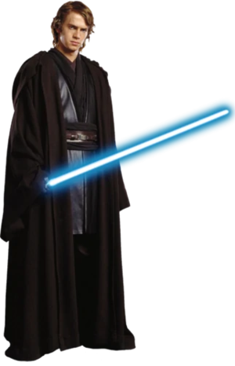
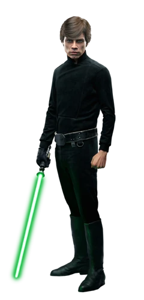
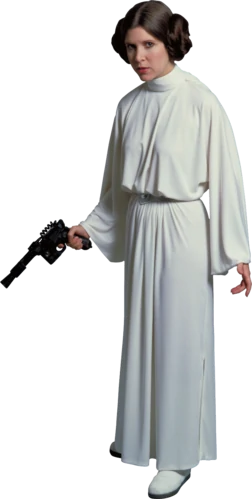
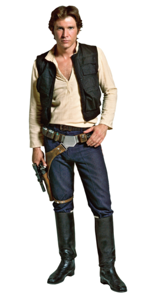
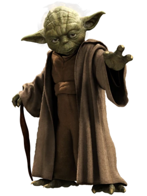
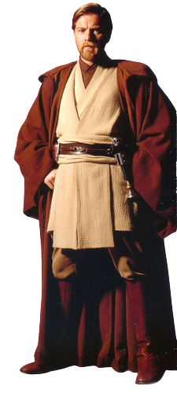
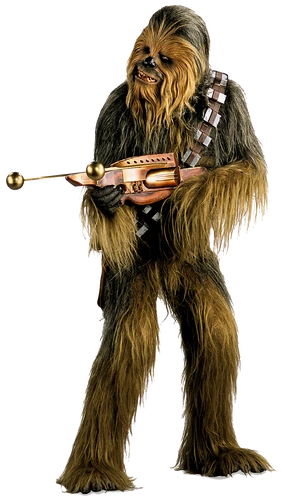
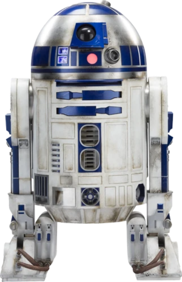
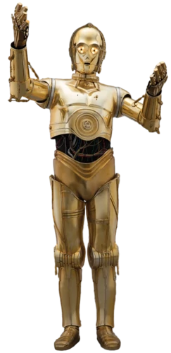

Anakin Skywalker, a central character in Star Wars, starts as a heroic Jedi Knight and later becomes Darth Vader. He is known for his exceptional Force abilities and piloting skills. Anakin's journey explores themes of inner conflict, love, and the seduction of the dark side. He serves as both a symbol of fear and oppression as Darth Vader and as a figure of redemption in his final moments. Anakin's story is a cautionary tale about the dangers of unchecked ambition and the consequences of succumbing to anger and fear. His legacy leaves an indelible mark on the Star Wars universe.

Luke Skywalker is a pivotal character in the Star Wars saga. Introduced as a simple farm boy on the desert planet of Tatooine, he discovers his hidden potential as a Jedi Knight. Trained by Obi-Wan Kenobi and later by Yoda, Luke becomes a beacon of hope in the fight against the oppressive Galactic Empire. He plays a crucial role in the downfall of Darth Vader and the Emperor, ultimately bringing balance to the Force. Luke is known for his unwavering optimism, determination, and connection to the light side of the Force. His journey showcases themes of heroism, self-discovery, and the power of belief. Luke Skywalker's legacy continues to inspire generations of Star Wars fans and remains an iconic symbol of hope and redemption.

Princess Leia Organa is a significant character in the Star Wars saga. She is a leader, diplomat, and a key figure in the Rebel Alliance's fight against the oppressive Galactic Empire. As a member of the royal family of Alderaan and a skilled diplomat, Leia possesses intelligence, courage, and a strong sense of justice. She is known for her iconic hairstyle, as well as her resourcefulness and determination. Leia is instrumental in delivering the plans for the Death Star, which sets off the events of the original Star Wars film. Throughout the saga, she evolves from a princess to a general, demonstrating her leadership and combat skills. Leia's character represents resilience, strength, and a commitment to fighting for freedom and the greater good. Her legacy as a prominent female figure in the Star Wars universe continues to inspire and empower audiences.

Han Solo is a charismatic and roguish character in the Star Wars saga. Known for his quick wit, piloting skills, and distinctive style, Han is a skilled smuggler and captain of the Millennium Falcon, his iconic spaceship. Initially motivated by self-interest, Han gradually evolves into a selfless hero and a key ally to the Rebel Alliance. He forms a close bond with Luke Skywalker and Princess Leia Organa, playing a crucial role in their battles against the Galactic Empire. Han's relationship with Leia evolves into a passionate romance that adds depth to his character. He is characterized by his cynicism, yet he possesses a strong sense of loyalty and a moral compass that guides his actions. Han Solo's iconic status is cemented by his memorable quotes, such as "I've got a bad feeling about this" and "Never tell me the odds." His story is a blend of adventure, charm, and unexpected heroism, making him a beloved character in the Star Wars universe.

Yoda is a legendary and wise character in the Star Wars saga. He is a member of the ancient and revered Jedi Order, renowned for his profound connection to the Force and his exceptional skills as a Jedi Master. Despite his diminutive size, Yoda possesses immense wisdom, knowledge, and an unmatched lightsaber combat prowess. He serves as a mentor to numerous Jedi, including Luke Skywalker, and imparts valuable teachings about the Force, Jedi philosophy, and the importance of self-discipline. Yoda is recognized for his distinctive speech pattern and memorable quotes, such as "Do or do not, there is no try" and "Size matters not." His role in the saga expands beyond his iconic stature, as he plays a significant part in the ultimate battle between the light and dark sides of the Force. Yoda's enduring legacy lies in his embodiment of wisdom, spirituality, and the eternal struggle against darkness, making him one of the most beloved and influential characters in the Star Wars universe.

Obi-Wan Kenobi is a pivotal character in the Star Wars saga. He is a Jedi Knight, skilled in lightsaber combat and the ways of the Force. As a mentor and father figure to Anakin Skywalker, and later to Luke Skywalker, Obi-Wan plays a crucial role in shaping the destiny of the galaxy. He is known for his calm demeanor, unwavering dedication to the Jedi Code, and his strong moral compass. Obi-Wan's journey spans from his time as a Jedi Knight during the Clone Wars to his self-imposed exile on Tatooine, where he watches over and guides Luke Skywalker. He is instrumental in the defeat of Darth Maul, Count Dooku, and ultimately sacrifices himself in a lightsaber duel against Darth Vader to allow Luke and his allies to escape. Obi-Wan's teachings and spirit continue to guide Luke and the Rebellion even after his physical presence is gone. Obi-Wan Kenobi represents the ideals of the Jedi Order, courage, selflessness, and the enduring power of hope. His character remains an integral part of the Star Wars mythos and continues to inspire audiences with his wisdom and heroic actions.

Chewbacca, commonly known as Chewie, is a beloved character in the Star Wars saga. He is a towering Wookiee from the planet Kashyyyk and serves as the loyal co-pilot and steadfast friend of Han Solo. Known for his distinctive growls and towering presence, Chewbacca is a skilled warrior and formidable fighter. With his immense strength, technical know-how, and fierce loyalty, Chewbacca becomes an integral member of the Rebel Alliance and assists in numerous missions against the Galactic Empire. Despite his inability to speak Basic, Chewbacca's expressions and body language convey a range of emotions and humor. His bond with Han Solo is both enduring and legendary, showcasing a deep friendship built on trust and shared adventures. Chewbacca's character adds a touch of warmth, loyalty, and charm to the Star Wars universe, making him a beloved fan favorite and an iconic part of the series.

R2-D2, often referred to as Artoo, is a beloved and iconic droid in the Star Wars saga. As an astromech droid, R2-D2 is equipped with a wide array of tools and gadgets, making him an invaluable companion and resourceful ally. Despite communicating through a series of beeps and whistles, R2-D2's personality shines through his unwavering loyalty, courage, and resourcefulness. He accompanies the main characters throughout their adventures, playing a pivotal role in the Rebel Alliance's fight against the Galactic Empire. R2-D2's memorable moments include his ability to hack into systems, repair starships, and carry secret messages. His enduring friendship with C-3PO adds a touch of humor and banter to their interactions. R2-D2's contributions to the saga are immeasurable, and his presence adds both excitement and heart to the Star Wars universe. Whether navigating treacherous situations or saving the day with his clever solutions, R2-D2 has become an iconic symbol of droid heroism and an adored character among fans of all ages.

C-3PO, often called Threepio, is a prominent droid character in the Star Wars saga. As a protocol droid fluent in multiple languages, C-3PO is known for his eloquent and sometimes anxious personality. With his iconic gold-plated exterior, he serves as a translator, diplomat, and loyal companion to various heroes throughout the saga. C-3PO's attention to etiquette and protocol often contrasts with the chaotic nature of the galaxy, creating moments of humor and comedic relief. Despite his aversion to danger, he finds himself embroiled in epic adventures and plays a significant role in the Rebel Alliance's fight against the Galactic Empire. C-3PO's relationship with R2-D2, his astromech counterpart, is a staple of the Star Wars saga, as their banter and contrasting personalities create a unique dynamic. While not possessing combat abilities, C-3PO's knowledge and diplomacy prove essential in navigating diplomatic situations and deciphering ancient languages. C-3PO's endearing personality, witty remarks, and unwavering loyalty make him a beloved character and an integral part of the Star Wars universe.